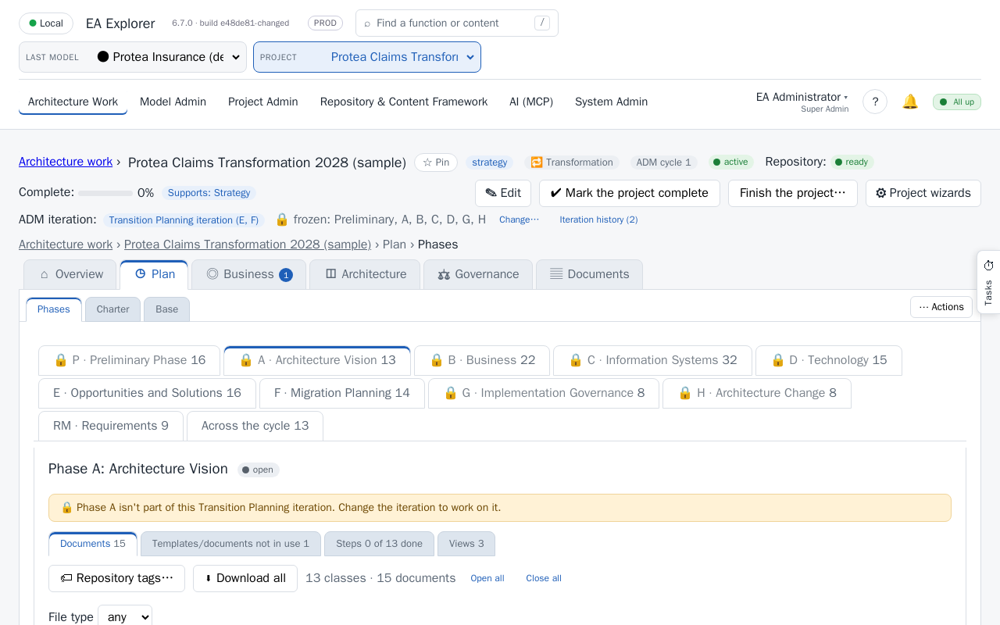

Choose the project's ADM cycle
For: Project Admin
A full ADM cycle, one of TOGAF's iterations, or your own set of phases.

#/projects/{p}/phasesWhy do this
Not every project needs every ADM phase at full depth. Choosing the iteration cycle (full, capability, development, transition planning or governance) sets the phases the project will run. See The ADM: how architecture work is done.
A project carries one pass of the ADM from vision to sign-off. Each task here is one of the steps along that route, and the project keeps them together so the whole story can be read later.
In TOGAF terms: The ADM's iteration cycles: which phases this project runs. See EA Explorer and the TOGAF Standard.
The goal: The project runs the ADM phases it needs, no more.
Before you start You need a role on the project.
Steps
- Open the project. On its page, choose the cycle: Full cycle, one of TOGAF's iterations (**Architecture Capability, Development, Transition Planning, Governance), or Custom** (the phases you tick).
- Phases left out are frozen on the ADM wheel and the phase tabs: read only, never deleted. Choose again at any time.
- In each phase, tick steps as they are done and add your own; put them in your own order.